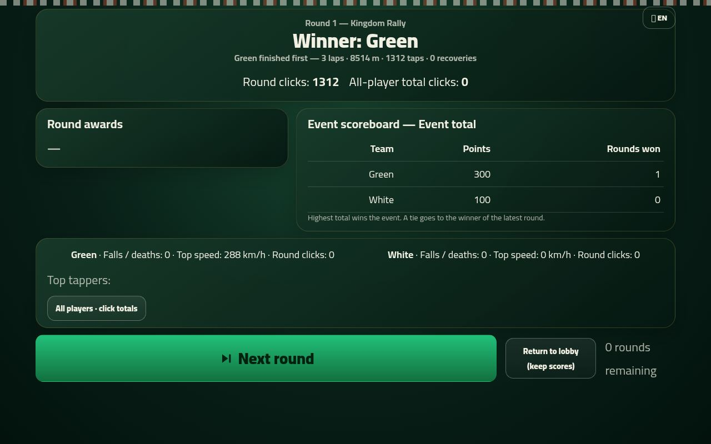

ND96 — National Day game (Asir)
Asir driving update LIVE, deployed 985675f: 7.27 km circuit (2.33x), continuous ribbon presentation, responsive solo TAP/HOLD, angle-sensitive wall losses and stronger boost. Map art/approved car preserved; scores/history and join code 6520 retained. Three-map cold/warm starts, nine transitions and failure/timeout/retry/cancel/refresh coverage verified. Human feel and hardware rehearsal remain unverified.